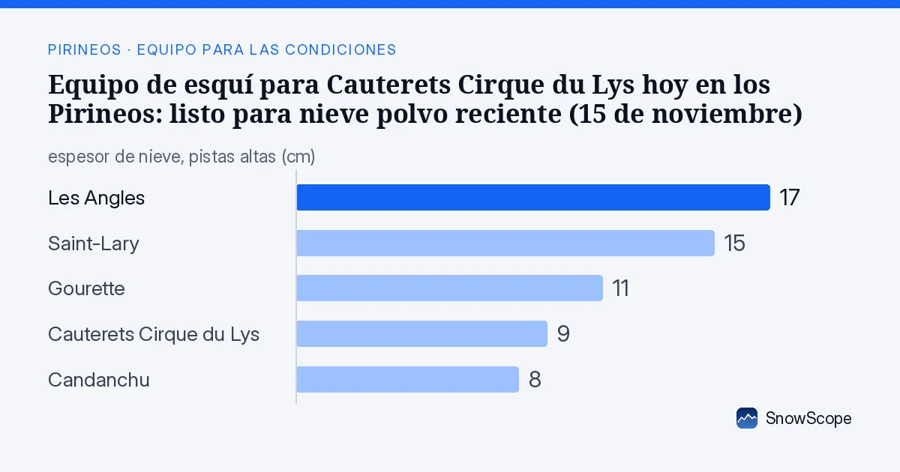

Equipo de esquí para Cauterets Cirque du Lys hoy en los Pirineos: listo para nieve polvo reciente (15 de noviembre)
Lee la nieve de hoy en los Pirineos y te sale nieve polvo reciente, nieve fina de principio de temporada y aire templado que puede dejar costra. Así que aquí va la lista de material, estación por estación, y cuándo salir. El trabajo de campo en montañas secas enseña una cosa: el mapa es un comienzo, la ladera tiene la última palabra.
Consulta la previsión de nieve en tiempo real de Les Angles en la app SnowScopeEspesor de nieve, alertas de nieve polvo y mapa 3D, gratis.
Cómo está la nieve hoy
Nieve polvo reciente (20 cm o más en 72 horas): Cauterets Cirque du Lys (+22 cm).
Nieve fina de principio de temporada (parte alta con menos de 30 cm): Les Angles (17 cm), Saint-Lary (15 cm) y Gourette (11 cm).
Aire templado que puede dejar costra (cota de nieve sobre la cima en un día templado sin mucha nieve nueva): Les Angles, Saint-Lary y Gourette.
| Estación | Espesor de nieve | Nieve nueva, 72 h | Previsto, próximos días | Cota máx. |
|---|---|---|---|---|
| Les Angles | 17 cm | 2 cm | 0 cm | 2358 m |
| Saint-Lary | 15 cm | 10 cm | 0 cm | 2462 m |
| Gourette | 11 cm | 18 cm | 2 cm | 2453 m |
| Cauterets Cirque du Lys | 9 cm | 22 cm | 3 cm | 2420 m |
| Candanchu | 8 cm | 19 cm | 2 cm | 2238 m |

El mejor momento y lugar para esquiar
El plan es el primer remonte, y fuera de pista los primeros días tras una nevada son los que piden más prudencia.
Busca las pistas más altas orientadas al norte: ahí está la mejor nieve.
Sube: las laderas de arriba guardan el aire más frío.
Lo que llevaríamos
Material de nieve polvo: esquís anchos o tabla, una lente para luz plana y algo que abrigue el cuello.
Coge tus esquís viejos, o alquila: nieve fina significa piedras, y los cantos afilados ayudan en las partes duras y raspadas. Quédate en las pistas pisadas.
Chaqueta de lluvia para las horas húmedas, y luego costra dura tras volver a helarse: cantos, casco, pistas pisadas.
Estación por estación
Les Angles (cima 2358 m): alrededor de 17 cm arriba, 2 cm de nieve nueva en 72 horas y 0 cm previstos en los próximos días, y la isoterma de 0 °C se mueve entre 2370 m y 4080 m.
En Saint-Lary (cima 2462 m) hay unos 15 cm en la parte alta, con 10 cm nuevos en 72 horas y 0 cm todavía por llegar, y la isoterma de 0 °C se mueve entre 2410 m y 3850 m.
Gourette (cima 2453 m): alrededor de 11 cm arriba, 18 cm de nieve nueva en 72 horas y 2 cm previstos en los próximos días, y la isoterma de 0 °C se mueve entre 2340 m y 3780 m.
En Cauterets Cirque du Lys (cima 2420 m) hay unos 9 cm en la parte alta, con 22 cm nuevos en 72 horas y 3 cm todavía por llegar, y la isoterma de 0 °C se mueve entre 2400 m y 3680 m.
Candanchu (cima 2238 m): alrededor de 8 cm arriba, 19 cm de nieve nueva en 72 horas y 2 cm previstos en los próximos días, y la isoterma de 0 °C se mueve entre 2180 m y 3650 m.
Material de seguridad fuera de pista
Fuera de las pistas pisadas, lleva ARVA, pala y sonda, aprende a usarlos y no vayas nunca solo. Lee antes el boletín oficial de aludes.
Consejos para esquiadores
- Si tus esquís no están listos, alquila o ponlos a punto en el valle: las tiendas de allí preparan los cantos para la nieve del día.
- Nieve en el mapa no significa que la estación esté abierta: consulta remontes y fechas en su web.
- Antes de cualquier salida fuera de pista o de travesía, lee el boletín oficial de aludes (enlaces abajo).
- La isoterma de 0 °C es una previsión con un error de varios cientos de metros: vuelve a mirar el mapa el día antes.
Sobre estas cifras
Los espesores de nieve de las estaciones son la nieve más profunda en las pistas altas en la fecha indicada; son estimaciones para una zona, no una medida en un punto. Las previsiones pueden cambiar. Consulta siempre el boletín oficial de aludes antes de salir fuera de pista.
Boletines oficiales de aludes: Météo-France / Meteocat / AEMET
Citar este informe
Para investigación, docencia o prensa: cifras y gráficos reutilizables libremente bajo CC BY 4.0 con esta cita.
SnowScope (2026), Equipo de esquí para Cauterets Cirque du Lys hoy en los Pirineos: listo para nieve polvo reciente (15 de noviembre), https://snowscope.app/blog/es/2026/11/pyrenees-what-to-bring-ski-gear-conditions-15-november-2026.html, consultado el 2026-11-15
SnowScope (Atlas Labs). (2026, November 15). Equipo de esquí para Cauterets Cirque du Lys hoy en los Pirineos: listo para nieve polvo reciente (15 de noviembre). SnowScope snow reports. https://snowscope.app/blog/es/2026/11/pyrenees-what-to-bring-ski-gear-conditions-15-november-2026.html
BibTeX
@misc{snowscope2026pyreneeswhattobringskige,
author = {{SnowScope (Atlas Labs)}},
title = {Equipo de esquí para Cauterets Cirque du Lys hoy en los Pirineos: listo para nieve polvo reciente (15 de noviembre)},
year = {2026},
month = nov,
howpublished = {\url{https://snowscope.app/blog/es/2026/11/pyrenees-what-to-bring-ski-gear-conditions-15-november-2026.html}},
note = {Published 2026-11-15 17:48 UTC; accessed 2026-11-15}
}· CC BY 4.0 · Métodos, datos y herramientas →
Les Angles: nieve y temperatura según la altura, este invierno vs el pasado (herramientas) →
Sigue Les Angles
Gratis: un aviso cuando llega la nieve y la previsión cada mañana.